DevOps deploy Arcadia Application - Main app¶
In this module, we will deploy the 2 main containers for Arcadia Bank application and we will publish them.
Note
At the end of this module, Arcadia Bank application will look like this.

Connect to Jumhost RDP and Login as user / user
Note
As a DevOps, you will deploy Arcadia Application (main and back end pods) with an automation tool set
Step 1 - Deploy Arcadia Main app with a CI/CD pipeline like a DevOps¶
Open
Chrome, you can notice Chrome opens all the tabs for youLogin to all tools
Controller : admin@nginx-udf.internal / admin123!
Jenkins : admin / admin
GitLab : root / F5twister$
Warning
If GitLab does not start, restart the docker in the GitLab VM (WebSSH > docker restart gitlab). Wait 5 minutes.
Kubernetes : click on
skipBIG-IP : admin / admin
In Gitlab, click on Administrator / Arcadia-MainApp
- Click on file
deploy - Click
editand make a modification, likeYES !!!!! - Click
Commit changes
- Click on file
Note
At this moment, you simulate a commit like a DevOps. This commit will trigger a webhook to Jenkins, so that Jenkins executes a pipeline.
- In Jenkins, click on
DeployMainApppipeline - A pipeline is running, click on it
- You can follow the steps
Note
At this stage, Arcadia Main app and Back End app are deployed un K8S. But you need to publish them with NGINX+ via the controller.
Step 2 - Publish Arcadia application with NGINX+ and Controller¶
The Jenkins pipeline did several things
Deployed Arcadia application (main and back end pods) in Kubernetes
- Connect to
Kubernetesand check that.- You can see 2 deployments (main and back) with nodeports services
Started 3 NGINX+ instances in a docker
- WebSSH to
CICD and DOCKER (NGINX API gw, Dev Portal)- Run a
docker psubuntu@ip-10-1-1-9:~$ docker ps CONTAINER ID IMAGE COMMAND CREATED STATUS PORTS NAMES bf86e23a9807 nginx-plus:36v1 "sh /entrypoint.sh" 33 seconds ago Up 31 seconds 10.1.20.9:8080->80/tcp, 10.1.20.9:8443->443/tcp NginxPlusAPI 74d679bdf5fb nginx-plus:36v1 "sh /entrypoint.sh" 33 seconds ago Up 31 seconds 80/tcp, 10.1.20.12:8090->8090/tcp NginxPlusDevPortal ac12c0f3148a nginx-plus:36v1 "sh /entrypoint.sh" 33 seconds ago Up 32 seconds 10.1.20.10:8080->80/tcp, 10.1.20.10:8443->443/tcp NginxPlusWebApp ab75d7bd60bb nginx "nginx -g 'daemon of…" 7 months ago Up 13 hours 0.0.0.0:80->80/tcp lab-nginx 35ddc5adc34d sameersbn/bind:9.11.3-20190706 "/sbin/entrypoint.sh…" 9 months ago Up 13 hours 0.0.0.0:53->53/tcp, 0.0.0.0:10000->10000/tcp, 0.0.0.0:53->53/udp bindCheck if NGINX+ instances appears in the controller
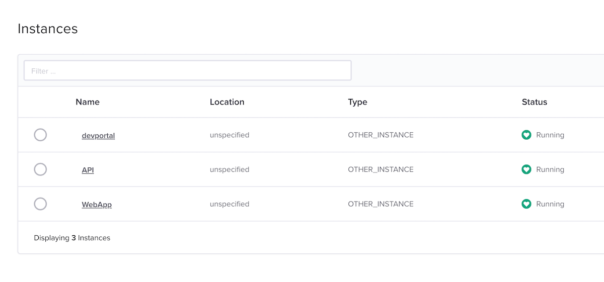
- In the controller GUI, click top
left corner icon, andinfrastructure- You can see 3 instances running
Deployed an AS3 declaration into the BIG-IP in order to publish the NGINX+ instance externally
Note
It is time to configure the NGINX+ instances in order to publish Arcadia application (main and back services)
Configure the Controller
Warning
For all the commands below, there are CASE SENSITIVE
Connect to the controller (admin@nginx-udf.internal / admin123!)
Click on top
left corner iconandServicesClick on
Appsandcreate app- Application name :
app_webapp - Display name :
Web Application Arcadia - Environment :
Production Environment
- Application name :
Click
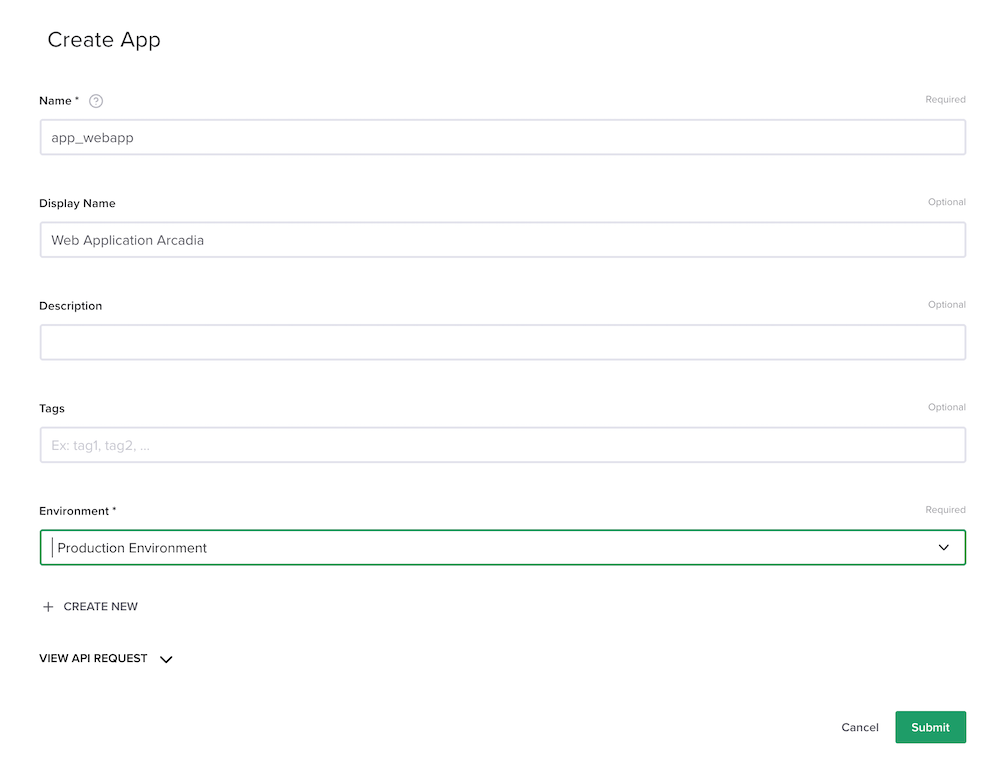submitClick on
Create Component- Configure the component as below
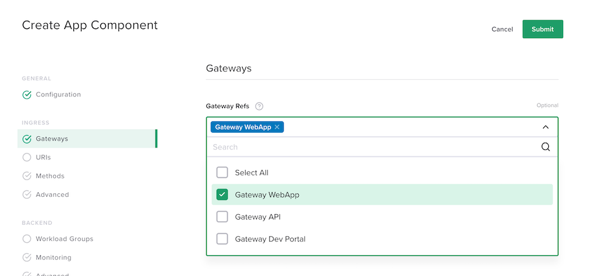
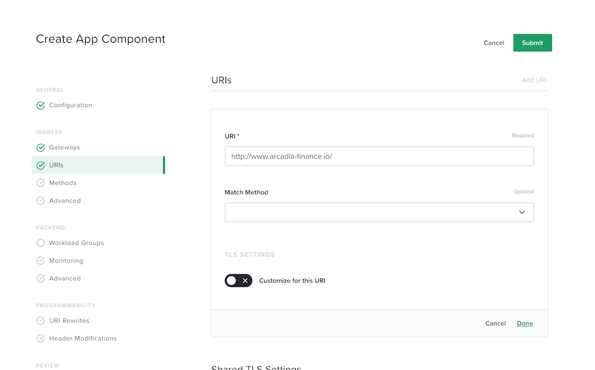
Warning
Don’t forget to click on
done
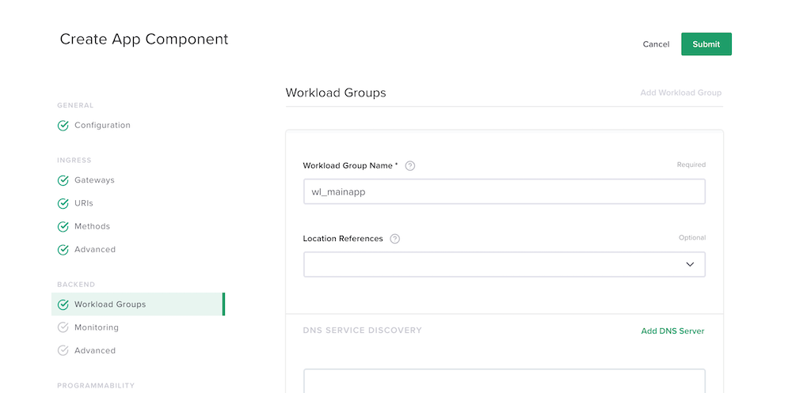
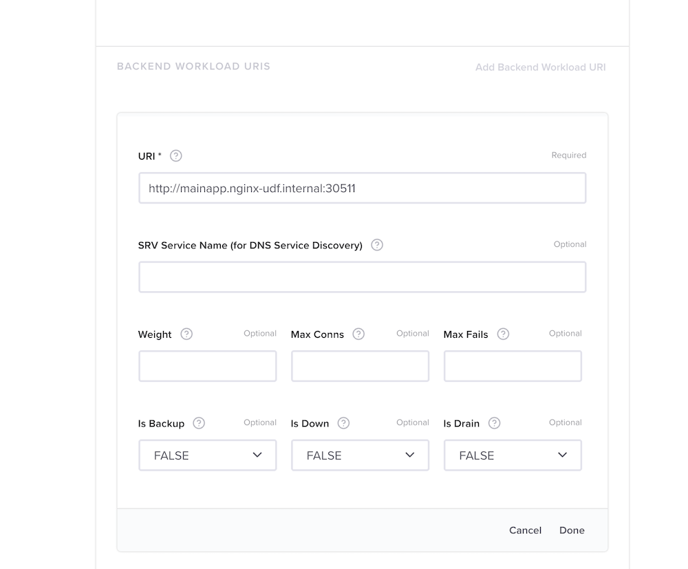
Warning
Don’t forget to click on
donetwiceNote
Click
submit
Get back to
Web Appand add a newComponentDo the same, but for the back end service
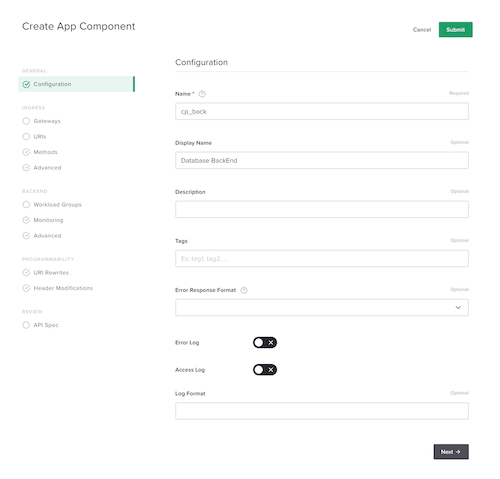
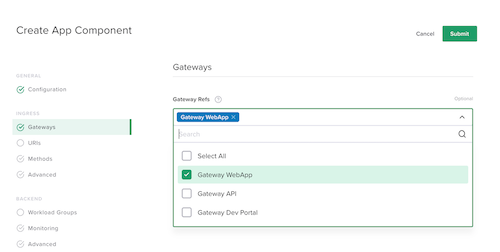
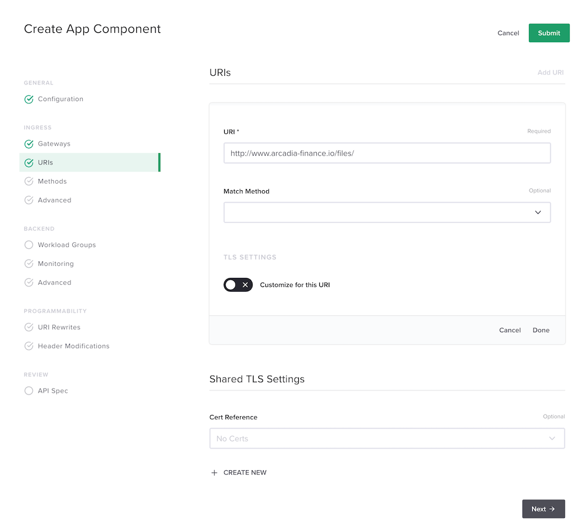
Warning
Don’t forget to click on
done
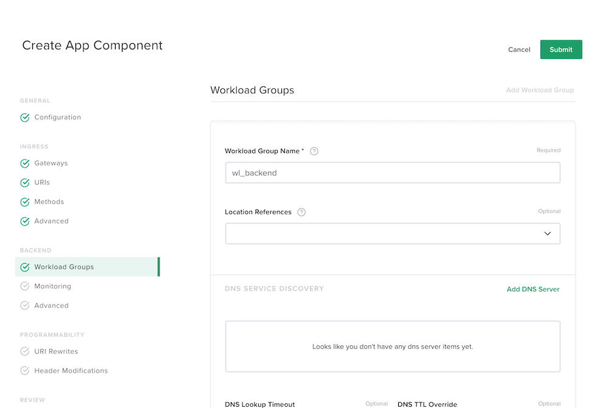
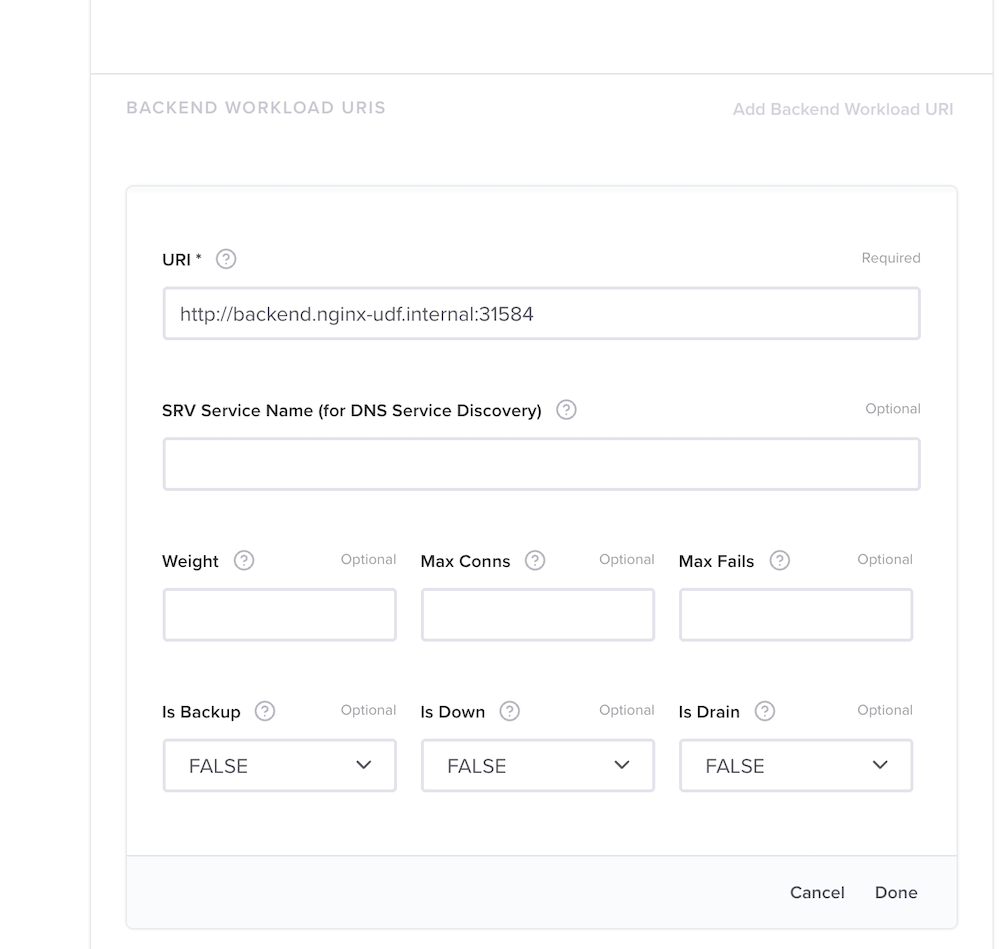
Warning
Don’t forget to click on
donetwiceNote
Click
submit
Step 3 - Test your Controller deployment¶
- Open
Chromeand click on the bookmarkArcadia Finance - Click on
Login - Login as
matt/ilovef5 - You should see the
main appwihtoutApp2norApp3
Warning
Congratulations, you have deployed your first modern app with NGINX+ and the NGINX Controller